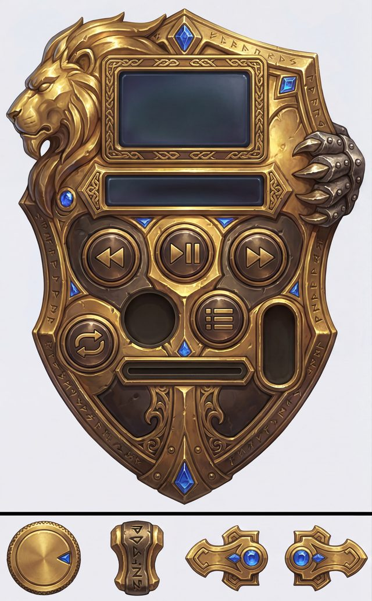
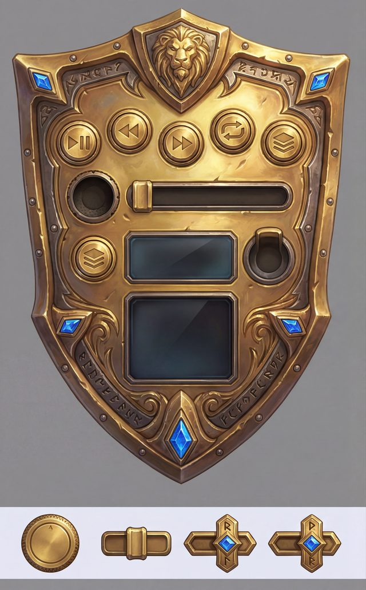
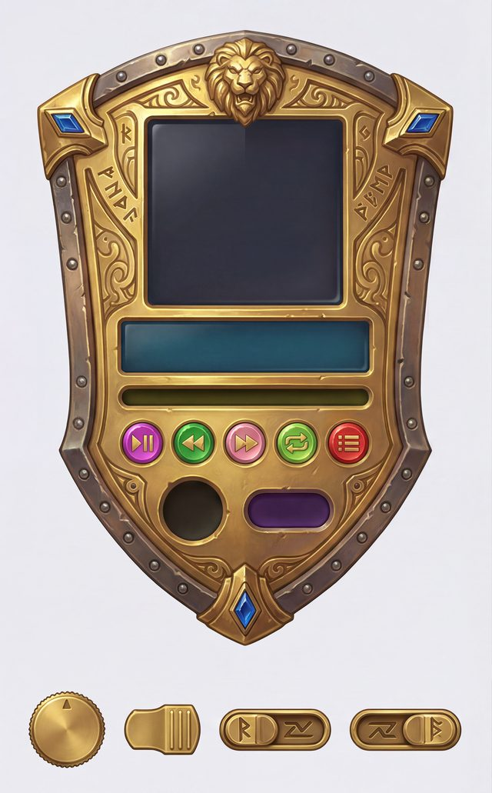
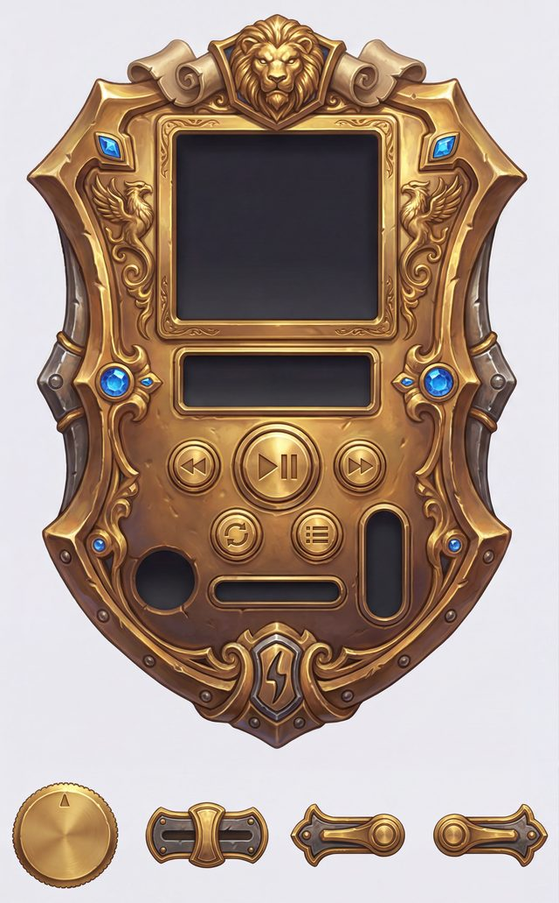
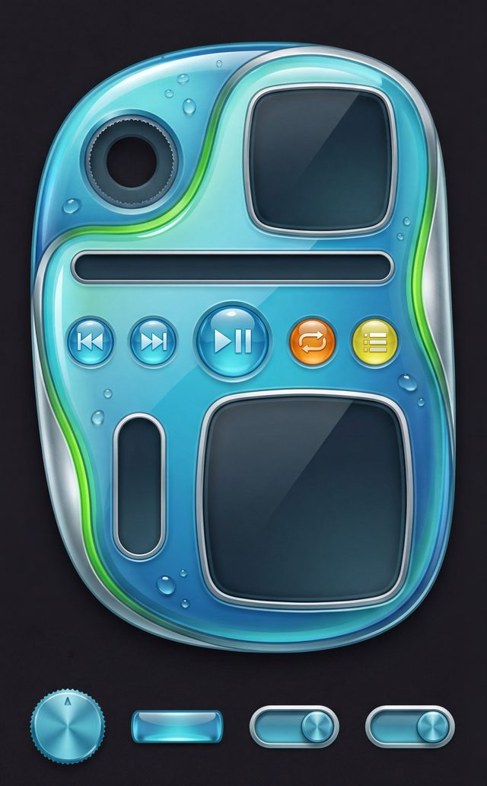
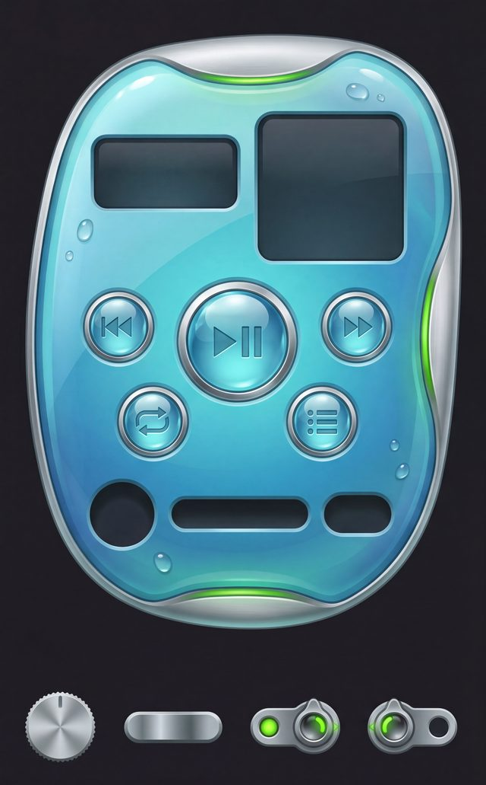
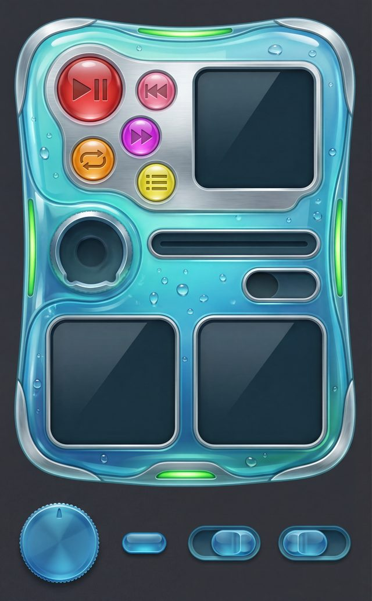
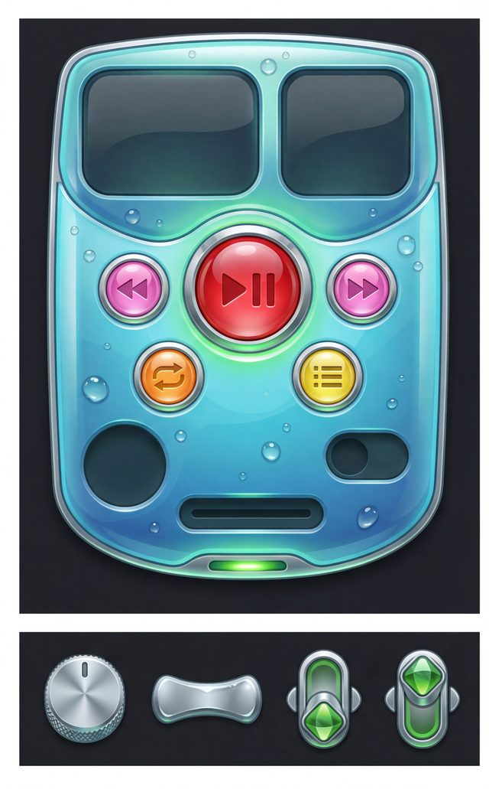

gen12's production prompt hands the paint model its per-control spec (roster,
guide-colour map, positions, sizes) as inline PROSE. Does re-encoding that same
information as ONE fenced ```json``` block — same blueprint image, same
semantic content, only the text encoding changes — make the model obey the spec more
faithfully? imgjson/ tested fenced-JSON prompts on the
extraction side (asking a model to read boxes back out of an image) and found it
neutral. This experiment tests the generation side — the half imgjson explicitly
flagged as untested.
Both arms share one blueprint image (a byte-identical copy) and the identical theme brief.
The manipulation is purely how the per-control spec is delivered in the prompt text. CONTROL's
prompt is captured verbatim by importing genskin.py and calling its own
main() — never hand-retyped — so this is the real production prompt, not a
paraphrase. TREATMENT keeps every narrative clause (theme, camera, no-text, empty-cavity,
zero-residue, exact-fit, shuffle-states) as prose, but swaps the per-control roster/position/size
block for machine-readable JSON.
kn(c) = cname(KEYS[c]) exactly)Two side-by-side columns of identical size, output at 5:4. The LEFT column is a BLUEPRINT: a neutral grey placeholder body with COLOURED SOLID FILLED patches marking each control's EXACT position, size and shape, plus a bottom SPRITE-STRIP band with 4 loose parts (volume knob cap, seek slider thumb, shuffle switch first state, shuffle switch second state). Each guide's colour maps to a control: MAGENTA = a PLAY triangle (right-pointing) merged with pause bars; PURE GREEN = a SKIP-BACK double-triangle / rewind chevrons; ROSE PINK = a SKIP-FORWARD double-triangle / fast-forward chevrons; SPRING GREEN = a REPEAT loop (two arrows chasing in a circle); PURE RED = a QUEUE / playlist icon (stacked horizontal lines); PALE AQUA = a VOLUME knob (top face, knurled rim, pointer notch); CHARTREUSE = the SEEK progress slider thumb (wide low grip); VIOLET-PURPLE = a SHUFFLE icon (two crossing arrows); CYAN = a VISUALIZER / spectrum-analyzer display window; ORCHID = an ALBUM ART / cover display window. KEEP EVERY CONTROL AT THE EXACT POSITION, SIZE AND SHAPE OF ITS GUIDE — do NOT move, resize, swap, rearrange, add or drop any control (their layout is locked). BUT the grey body is ONLY a rough placeholder...
assets-jsonspec-wc-goldshield-treat-121/results.json's
stored prompt field (14,747 chars total)```json
{
"_note": "machine-readable control spec. position_frac is a fraction of
the device column's own width (fx) and the device area's own height
(fy)...",
"controls": [
{
"id": "playpause", "role": "button",
"guide_color_name": "MAGENTA", "guide_color_rgb": [255, 0, 255],
"final_icon_or_content": "a PLAY triangle (right-pointing) merged
with pause bars",
"position_frac": {"fx": 0.5, "fy_of_device_area": 0.6},
"shape": "circle", "radius_frac_of_col_w": 0.0867
},
{ "id": "prev", "role": "button", "guide_color_name": "PURE GREEN",
... },
... 8 more controls ...
],
"strip_order_left_to_right": ["vol_cap","seek_thumb","shuffle_state_1",
"shuffle_state_2"],
"congruence_rule": "each strip part's size EXACTLY equals its matching
device slot's size above..."
}
```
"THE MACHINE-READABLE SPEC for this generation — follow it exactly for
every control's identity, guide-colour, position and size" (preamble,
prepended before the block)
position_frac/size numbers duplicating what the blueprint image already shows
visually. The narrative clauses after this block (residue, empty-cavity, camera, shuffle
states, ...) are otherwise the same prose as CONTROL, generically pointing back at "the
spec above" instead of re-stating numbers.Same theme + seed, CONTROL (prose) vs TREATMENT (fenced JSON) side by side. Bleed = mean guide-hue residue leaking into the finished paint (lower is better — the model painted the alignment-marker colour into real pixels). Drift = mean template drift in px on a ~2300×3700px canvas (how far each control landed from its locked blueprint slot — lower is better, and a lower bound near 0 means the model actually obeyed the locked layout).








| CONTROL (prose) | TREATMENT (fenced JSON) | reading | |
|---|---|---|---|
| bleed lower in treat | 4 / 4 pairs | Directional in every pair (n=4, sign test p=0.0625 one-sided — suggestive, not significant). | |
| mean bleed | 5.036% | 1.562% | Guide-hue residue (the alignment-marker colour leaking into finished pixels) dropped substantially. |
| drift lower in treat | 2 / 4 pairs | Coin-flip — the encoding did not make the model respect the locked template more consistently. | |
| mean drift | 690.0px | 641.2px | ~7% lower on average, but driven by 2 of 4 pairs improving a lot while the other 2 got flat-to-worse — both arms still treat the locked layout as a suggestion, not a constraint. |
| extract12 gate PASS | 2 / 4 | 3 / 4 | Both CONTROL fails were emptiness (a cavity got painted over); the one TREATMENT fail combined a region-misplacement with emptiness. |
Caveat from the adjudication log (verdict.json
adjudication_notes): a VLM ("SOTA-eye") pass FAILed all 8 gens, but its dominant
reason — "vol/seek/shuffle parts missing from the device, sitting on a strip below" — is a
false flag on this before-assembly design (empty cavities + a loose-parts strip ARE the spec);
only its residue/baked-text/rearrangement claims were adjudicated. Confirmed by pixels+eye:
wc-control-134 and fa-pod-control-134 painted all 5 buttons in their
guide hues; fa-pod-treat-134's buttons also echo guide hues despite the VLM
calling it "intended design" — the metric and the theme palette overrule that read.
PROMPT_JSON_SPECgenskin.py:80mode == "templated" and conditioning == "solid"
(genskin.py:738) — the only arm this experiment tested. Outline/twoimg
conditioning and templateless mode always keep the prose prompt regardless of the flag.Flipping it swaps only the per-control spec's text encoding — prose roster line vs
fenced ```json``` block — for that one conditioning path. Nothing else in the
prompt, the blueprint image, the model, or the pipeline changes. Per
generation-spend-rule, flip only between batches, never mid-batch.
A side quest that grew out of this experiment's data: bonus_probe.py
re-asked the SAME image model for the SAME wc-goldshield control boxes that imgjson's arm A got
wrong — but this time in Google's own documented box_2d=[ymin,xmin,ymax,xmax]
0–1000 convention instead of imgjson's ad-hoc 0–1 {x,y,w,h} ask. The
boxes came back real (mean IoU 0.79 under the observed reading vs imgjson's 0.003) — overturning
imgjson's "uncalibratable internal frame" conclusion. A follow-up
stability_probe.py (3 more calls) found the box element ORDER
itself unstable call-to-call (1 of 4 calls emitted a transposed order), so the corrected verdict
is still "not witness-grade for the pipeline," just for a different reason than round 1 thought.
Full arc, data, and the affine-fit diagram: imgjson/explain.html
§ROUND 2 CORRECTION.
NEUTRAL-TO-MILDLY-HELPFUL, not a fix. The fenced-JSON encoding never hurt anything
measured, and directionally improved guide-hue bleed in 4/4 paired gens (mean 5.04%
→ 1.56%; n=4 sign test p=0.0625 one-sided — directional, not significant), with the
extract12 gate passing 3/4 treat vs 2/4 control. It does not fix the dominant paint
defect: layout drift is statistically flat between arms (690px control vs 641px treat on a
~2300px canvas) — both arms still treat the locked template as a suggestion, and guide-hue
button echo still occurred in a treatment gen (fa-pod-treat-134).
Encoding the spec as JSON does not make the image model obey it — it mainly seems
to reduce how often the guide COLOUR WORDS get painted as pigment. Recommendation: do not
adopt as a fix. If adopted at all it is safe (no observed cost), but the real levers for
layout adherence and colour-echo remain elsewhere — seed selection, icon-no-echo clauses,
mask-column decoupling — not prompt encoding. ai-image-coords-rule's
untested-not-refuted flag on this question is now resolved: tested, neutral.